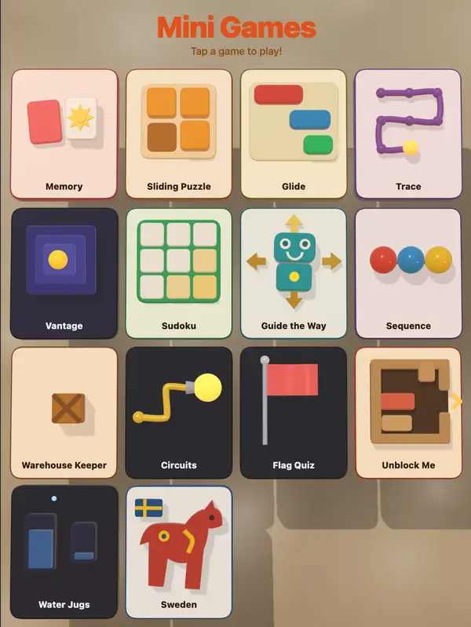
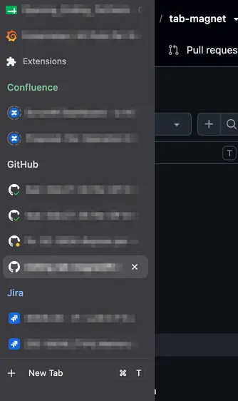
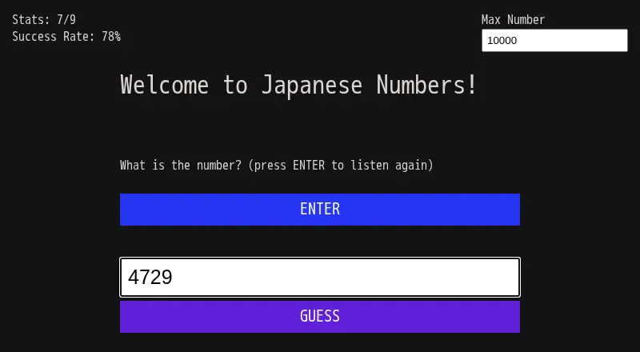

claude-in-docker
A solution for running Claude Code inside a Docker container.
I started tinkering with this after almost getting pwned by a
malicious settings.json planted in a repo. Claude Code
picks up project-level settings when it starts, so a file checked into a
repo can grant itself permissions and run commands on your machine before
you notice. Running the agent in a container means whatever it does, it
does in there — not on the host.
Mini-games

A collection of small browser games.
I made this for my children. I don't want them playing ad-based games on the iPad, and I'm too much of a cheapskate to buy games. It auto-deploys on Cloudflare, and I add new games by writing a GitHub Issue. Brilliant.
VSCode Server Web
VSCode Server running in a Docker container, served as a web UI.
Instead of using dev containers and trying to secure your VSCode instance, run VSCode completely in a local web UI. This is basically GitHub Codespaces, but locally and for free.
Google Meet Auto Mute
Chrome extension that turns off mic and camera on the Google Meet pre-join screen.
I vibe coded this because I don't trust any Chrome extension by default, and the feature is simple enough that you can just ask Claude Code to whip it up for you. Building it taught me how easy it has become to make your own tools.
Tab Magnet

Chrome extension that routes tabs from configured sites into dedicated tab groups.
Grouping tabs is a nice feature, but how do you keep the grouping in order when you keep opening new tabs all the time? Let the extension do it for you. I've never been happier — perfect order in my browser for once.
Learn Japanese Numbers

Hear a random number spoken in Japanese, then type what you heard.
Set a max number and press Enter to hear one. Press Enter again to hear it once more, and the page keeps your success rate.